衛了教你餵母乳 The Nurture Way
運用遊戲化設計讓使用者願意持續使用的 APP，獲 InnoConnect+ 企業金獎。
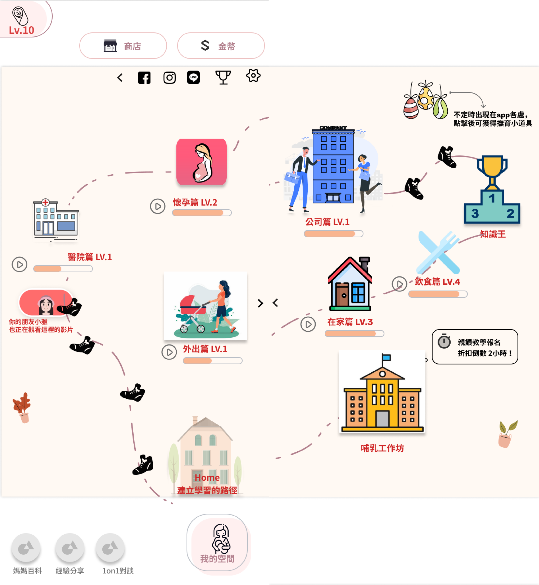
Project Snapshot
| Role | Team | Project Duration | Tools | System Scope |
|---|---|---|---|---|
| UX Researcher / Product Designer | 4 人（資管、資工、織品、德語系成員） | 2021.08 – 2022.01 | 遊戲化八角框架、Miro、Figma | 衛教影片與知識 PK、媽媽社群、金幣與客製化虛擬寶寶 |
Context
Project Background
母乳哺育對媽媽與嬰兒有諸多好處，但實務上仍面臨三個問題：
- 台灣 2016 年的 6 個月內純母乳哺育率約 50%，仍有進步空間，且應從懷孕期就開始準備哺乳知識與自信心，而非等到產後才開始。
- 現行的產前衛教多以口頭、書面或影音「講授」為主，孕婦缺乏實際操作的機會，難以建立長久的信心與知識。
- 若衛教知識不足，孕婦容易對哺乳缺乏信心，使未來的哺育行為難以持續，也提高改用配方奶的機會。
媽媽餵作為國內母乳哺育相關產品的領導品牌，長期投入哺乳衛教（如媽媽教室、哺乳育兒百科），但單靠廠商角度提供產品與線上衛教知識，仍難以讓潛在顧客（懷孕媽媽）長期使用並黏著在衛教內容上。若能在懷孕初期就吸引媽媽開始使用衛教 App，建立哺乳知識與信心，將更有機會讓她們持續哺乳，廠商也能獲得合理的商業回報——因此衛教 App 的設計相當關鍵。
Target Users
新手父母
Project Goals
- 以遊戲化設計（八角框架）建置衛教app。
- 以讓潛在顧客能經歷三階段，從發現、開始使用以及持續黏著在衛教app上。
Research & Insights
Research Methods
- Persona
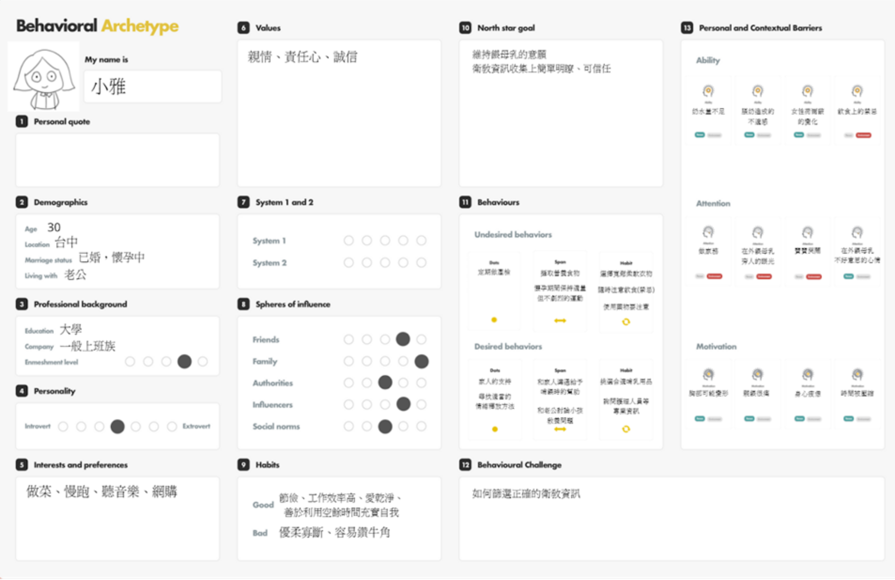
小雅是一位 30 歲、懷孕初期的媽媽，因產檢時接觸到親餵母乳的資訊而產生興趣。平日上班之餘，她得利用零碎時間上網蒐集衛教資料，但網路資訊過多、真假難辨，其他媽媽的經驗分享也缺乏實證，讓她感到疲憊與焦慮。
- Desktop research：痛點與甜蜜點
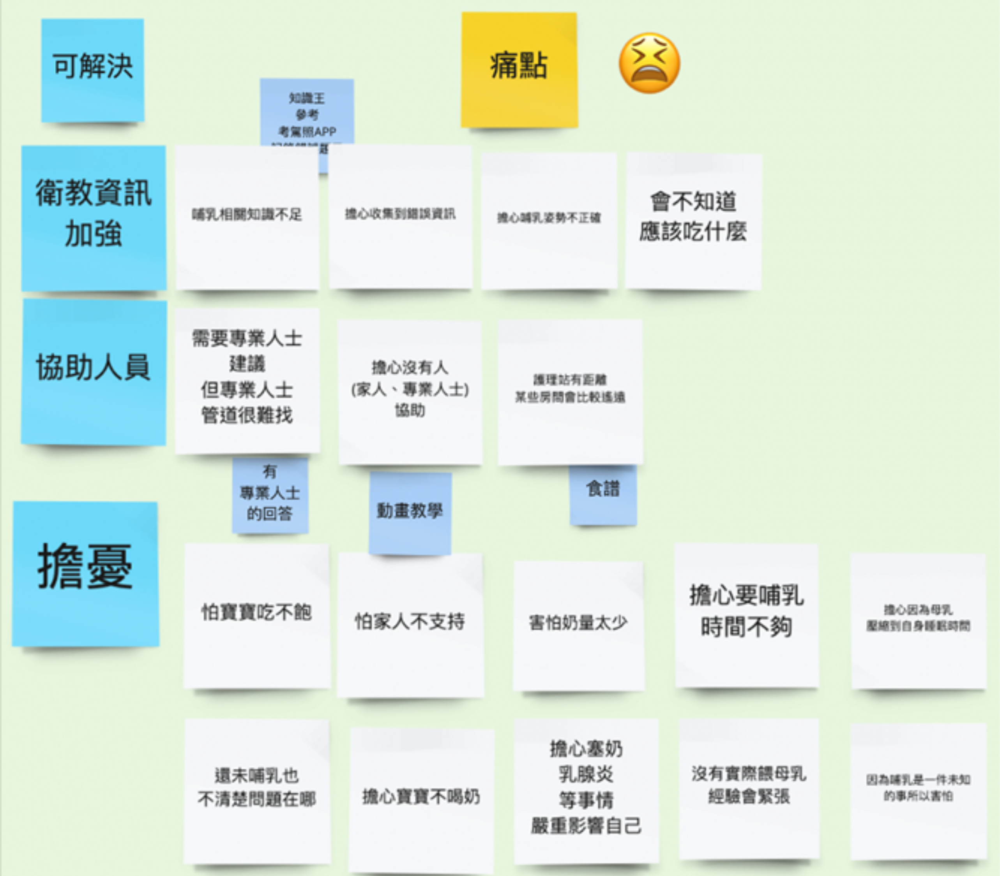
我們將痛點歸納為三類：衛教資訊不足（怕收集到錯誤資訊、姿勢不正確、飲食禁忌不明）、缺乏專業協助（專業人員難尋、擔心突發狀況求助無門），以及對哺乳行為本身的憂慮（家人不支持、睡眠被壓縮、乳腺炎風險、對自己沒信心）。
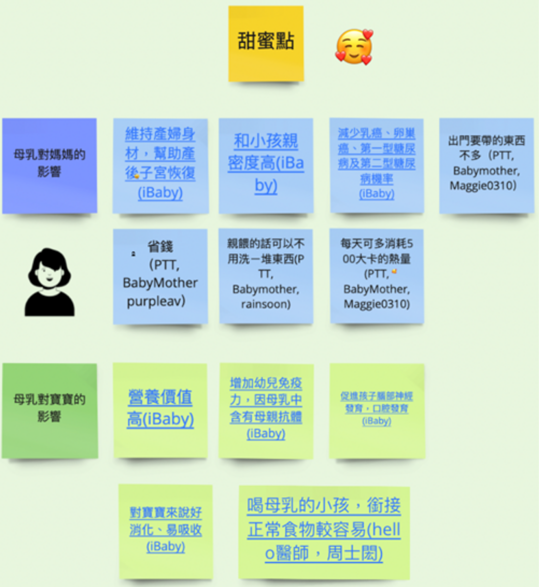
甜蜜點則分為對媽媽的益處（降低乳癌卵巢癌風險、省錢、提升親密感、恢復體態）與對寶寶的益處（增加免疫力、促進腦部發育、降低過敏風險），這些是促使媽媽克服萬難堅持哺乳的關鍵誘因。
- 關鍵字心智圖
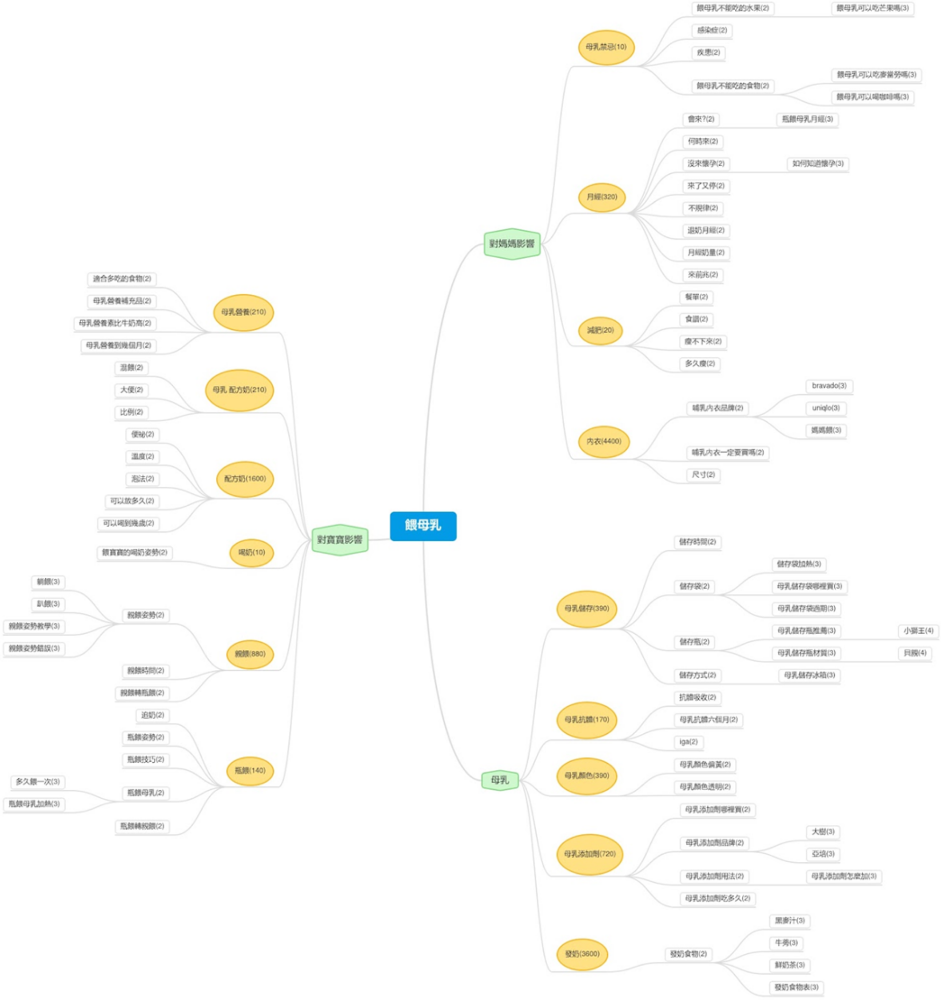
依痛點與甜蜜點整理關鍵字，並用 SEO 工具分析搜尋量：對媽媽的影響中「內衣」「月經」搜尋量最高；對寶寶的影響中「配方奶」搜尋量最高，「母乳與配方奶比較」「母乳營養」也有相當搜尋量，顯示強調親餵與配方奶的營養差異，是吸引媽媽選擇母乳哺育的切入點。
- 情境流程圖與情境分鏡圖
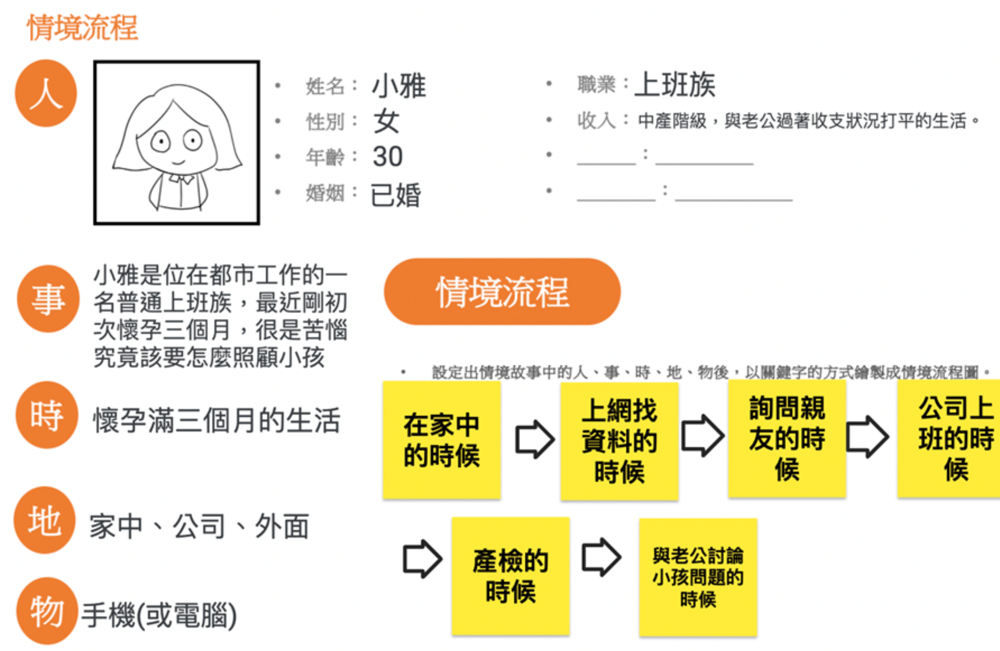
小雅在懷孕初期身體不適，假日還得為了選擇哺育方式上網查資料，但網路資訊雜亂、未經專家驗證，親友經驗又因人而異，一個月一次的產檢也無法即時解惑，讓她感到手足無措。
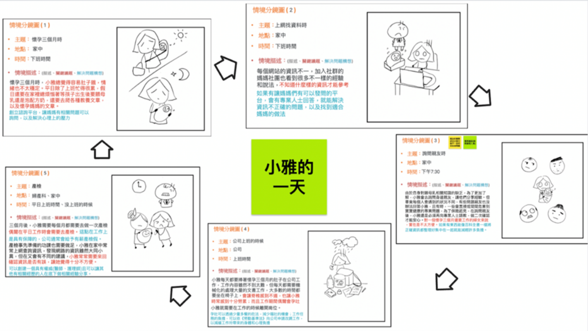
進一步拆解成五個具體情境：懷孕初期同時要煩惱餵養方式又要查資料、網路資訊量大但真偽難辨、詢問親友但各自狀況不同、懷孕期間仍要工作而身體負擔重，以及產檢頻率低、遇到問題無法即時請教醫生。這五個情境共同指向同一個需求：一個「集中、可信賴」的衛教資訊來源。
Key Findings / Main Problems
- 一、 功能性
設計此一衛教知識APP旨在替媽媽們省下大量上網查詢母乳相關資訊的時間及降低搜尋到錯誤資訊的可能性，主要提供經專業人士確認過的衛教影片，並以遊戲化設計的方式包裝，為原本枯燥乏味的學習增添許多趣味性。像是媽媽們可以在觀看完衛教影片後到「知識王」區去和其他使用者以遊戲PK形式互相切磋看看誰的衛教方面知識更勝一籌，而每次挑戰完後勝者可以獲得一定數量的金幣。金幣在累積到特定數量後能解鎖髮型、衣服或褲子等等，讓媽媽去客製化自己或寶寶的人物形象，營造個人化專屬感。
- 二、 情緒性
發現媽媽們不論是身處懷孕或哺乳階段，若能有其他同伴的相互支持和陪伴，對她們來說絕對會是一大助力，也會提高她們自信心，堅定自己能持續哺乳。因此，我們也在APP內特意打造了一個專屬媽媽們的社群，讓他們能相互交流、分享心情。而這個社群和臉書上的媽媽社團的最大不同之處在於媽媽們的每個困惑、疑問會由受過專業訓練的媽媽餵專員來做回覆，不會再有媽媽們被各方說法搞得一頭霧水的情況發生。
Key Insights
- 如果 APP 能快速傳遞給媽媽們正確的衛教知識，不僅能順利化解大部分的痛點，還能大幅提升媽媽們願意親餵母乳的意願，並進而提升媽媽餵品牌辨識度和各式商品買氣。
Design Opportunities
用 Jobs-to-Be-Done（JTBD）量性分析排序機會點，分數越高代表市場性越大。前三名分別是「降低因知識不足導致未來親餵錯誤」（12.69 分）、「減少嬰兒哭鬧想吃奶時的疲憊感」（11.92 分）與「增加護理人員實際示範餵母乳的機會」（10.77 分），其餘機會點多落在「增加親餵自信心與親密感」「強化哺乳計畫」等主題，分數則在 5–9 分之間。
以機會點 7.5 分為門檻篩選後發現，潛在顧客最大的市場需求是「不要有錯誤知識的發生」——即使市場上已有衛教 App 或網站，仍無法讓潛在顧客持續黏著，多數人還是得仰賴同儕經驗或未經驗證的業配資訊。這也讓我們確認遊戲化衛教 App 的內容方向，應優先涵蓋：嬰兒哭鬧時的應對策略、正確親餵示範、初期哺乳自信心建立，以及提早準備的哺乳計畫。
How This Influenced the Design
JTBD 分析顯示，潛在顧客最在意的是「不要有錯誤知識的發生」，而不是市面上已有的衛教內容本身。這讓我們確定遊戲化衛教 App 的切入點：把可信賴的哺乳知識包裝成遊戲化內容，讓媽媽願意持續黏著在正確資訊上，而不是轉而依賴同儕經驗或未經驗證的網路文章。因此我們把設計拆成搜尋、上手、支撐黏著三個階段，分別對應媽媽從「發現產品」到「長期回訪」的完整歷程。
Design Process
Prototype
Key Design Decisions
我們預想懷孕媽媽會經過三個階段使用媽媽餵遊戲化衛教 App，並分別對應遊戲化八角框架的驅動力設計：
- 搜尋階段（Discovery）：目標是讓媽媽接觸到資訊後願意上網站瀏覽、註冊試用。預期行為包含閱讀媽媽百科、報名媽媽教室、查看使用者見證、嘗試試用版並完成註冊。對應驅動力：史詩般招喚（哺育健康的召喚標語）、發展與成就（拖拉式知識小遊戲）、創意與培力（首頁益智遊戲換取註冊獎勵）、稀有性與稀缺性（限時訂閱折扣、已拿證書的資深媽媽展示）。
- 上手階段（Onboarding）：目標是讓媽媽選擇 6 個成長路徑學習、加入媽媽社群並持續互動。預期行為包含累積實力值（XP）、觀看衛教影片並留言、加入社群並自我介紹。對應驅動力：發展與成就（知識王 PK、成長路徑實力值、每日任務影片）、創意與培力（雷達圖隨學習改變形狀、客製化學習路徑並取得證書）、社群與關係（顯示共同好友）、稀缺性（每日限時問題箱）、神秘感（彩蛋箱道具）、避免損失（工作坊限時折扣）。
- 支撐黏著階段（Scaffolding）：目標是讓媽媽持續登入、收集金幣、撫育虛擬寶寶並與資深媽媽互動。預期行為包含每週登入兩次、檢視學習 dashboard、購買虛擬商店商品。對應驅動力：史詩般招喚（金幣捐贈公益團體）、創意與培力（客製化自己與寶寶的虛擬角色）、擁有與占有（單元寶物箱、依偏好推薦影片、發文換金幣）、發展與成就（近百種排行榜依主題分眾呈現，避免固定同幾人霸榜）。
Solution
Final Solution
完成一套以遊戲化八角框架設計的衛教 App：懷孕媽媽依需求選擇學習路徑，觀看衛教影片並累積實力值，透過知識王 PK、金幣獎勵與客製化虛擬寶寶，讓學習衛教知識的過程變得有趣且值得持續回訪，最終獲得 InnoConnect+ 企業金獎肯定。
Main Features
- 六大成長路徑（懷孕篇、醫院篇、上班篇、外出篇、在家篇、飲食篇）的衛教影片與實力值系統
- 知識王 PK 遊戲，讓媽媽互相切磋衛教知識並累積 XP
- 金幣獎勵機制，可解鎖客製化虛擬寶寶造型，或換取衛教社群發文獎勵
- 專屬媽媽社群，由受過訓練的專員回覆提問，取代真假難辨的網路資訊
Key Screens
- 主畫面&次畫面選單
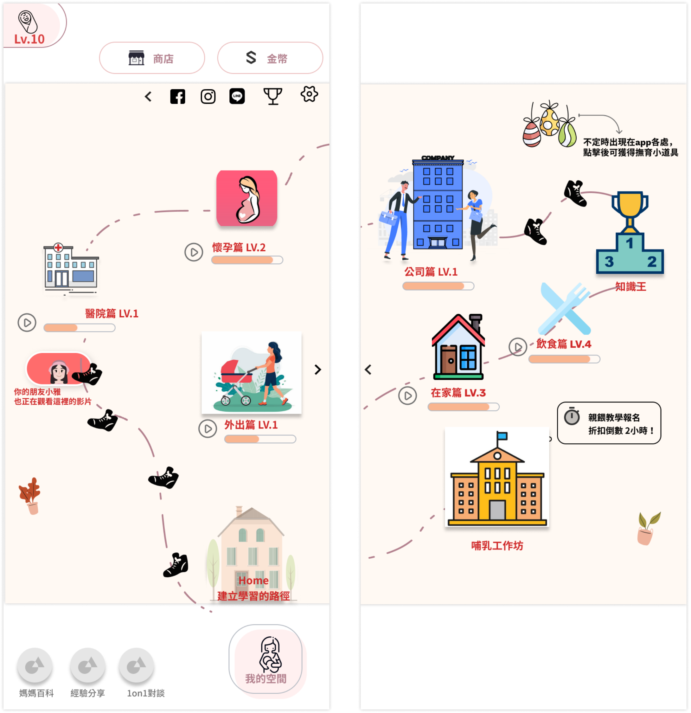
懷孕媽媽選擇自己喜愛或需要的學習路徑，客製化學習路徑且學習完成後可獲得知識王認證證書2 （上手階段-創意與培力驅動力）- Button 說明
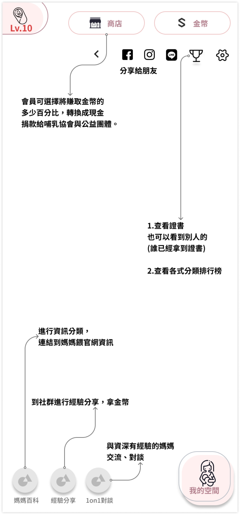
可以看到已拿到證書的資深媽媽（搜尋階段-稀缺性動力） 懷孕媽媽可以選擇金幣多少百分比（%），可以轉換成現金，捐給哺乳公益團體（支撐黏著階段-史詩般招喚驅動力） 在自己blog寫使用經驗文章（例如泌乳器使用文），可換取金幣（支撐黏著階段-擁有與占有）- 衛教影片示意圖
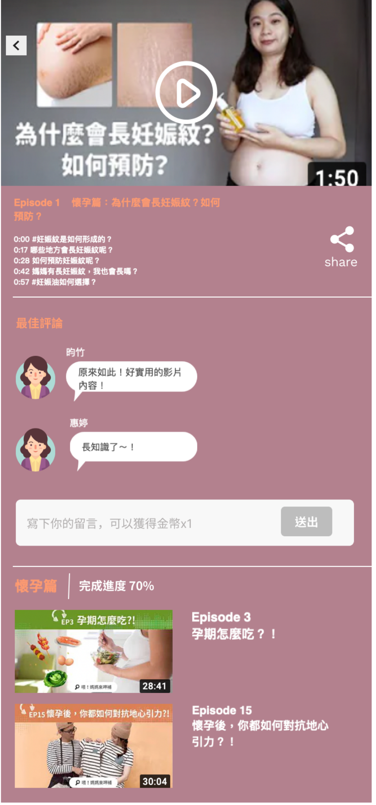
看某個路徑的衛教建議影片以及對衛教影片留評論（上手階段-預期行為）- 知識王
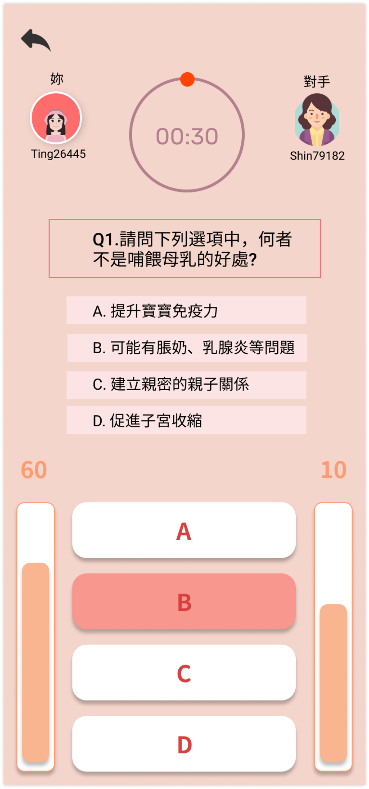
會員PK（知識王形式，能檢測自身的衛教知識程度，增加XP）（上手階段-發展與成就驅動力）- 客製化形象頁面
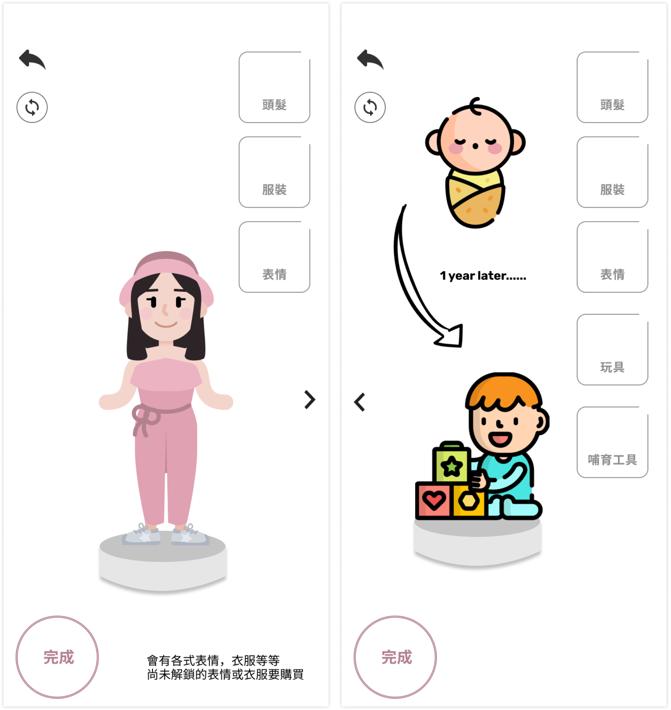
撫育虛擬寶寶（支撐黏著階段-預期行為）Design Rationale
每個介面功能都先對應到「希望媽媽做出什麼行為」，再回頭挑選合適的八角框架驅動力，避免功能只是為了遊戲化而存在，卻無助於媽媽實際養成哺乳知識與習慣。
Why This Design
八角框架的十一種驅動力分別對應搜尋、上手、支撐黏著三個階段的預期行為，讓每個功能設計都能追溯回「希望媽媽做出什麼行為」，而不是為了遊戲化而遊戲化。
Impact
Testing Approach
以競賽評審與內部團隊角色扮演的方式，走過搜尋、上手、支撐黏著三階段的完整體驗，檢視每個八角框架驅動力是否確實對應到預期的媽媽行為。
Results
作品獲得 InnoConnect+ 企業命題競賽金獎，肯定「用遊戲化八角框架設計衛教 App」這個方向的可行性與完整度。
Future Improvements
- 針對正式媽媽使用者進行易用性測試，驗證知識王與虛擬寶寶機制是否真的能提升長期回訪率
- 補上更多元的衛教內容場景（如職場哺乳、外出攜帶等），擴大六大成長路徑的涵蓋範圍
Reflection
What Went Well
團隊成功把抽象的八角框架驅動力，逐一轉譯成具體的介面功能（知識王 PK、金幣、虛擬寶寶），並在競賽中獲得金獎肯定，證明遊戲化設計方向與執行細節都具有說服力。
What I Would Do Differently
目前的驗證仍以競賽評審與團隊內部走查為主，若能在設計階段就找真實的孕媽咪參與測試，會更有機會及早發現遊戲化機制是否真的能轉換成長期使用習慣，而不只是評審眼中的完整度。
Key Learnings
- 溝通能力：當完全沒合作過且要在線上合作時，學習在遠距環境中明確表達意見。
- 即時止損：當發現問題時要馬上提出，不要拖到最後再嘗試解決。
- 情緒設計思維：理解情緒需求在體驗中的重要性。
Skills Demonstrated
- 遊戲化框架應用：以八角框架拆解使用者行為並對應介面功能設計
- 使用者行為分析（JTBD）與機會點量化排序
- 跨領域遠距團隊協作與專案時間管理